可视化技术知识点
可视化综述
可视化定义
基于计算机的可视化系统提供数据集的可视化表达，意图帮助人们更有效地执行任务
Computer-based visualization systems provide visual representations of datasets intended to help people carry out some tasks more effectively
三个最低标准(Three Minimal Criteria)
- 基于非可视的数据
- 生成一张图
- 结果必须有可读性和可辨认性
- Based on (non-visual) data
- produce a image
- the result must be readable and recognizable
与各领域的关系
| input | output | field |
|---|---|---|
| image | image | image processing |
| image | 3d model | CV |
| 3d model | image | CG |
| data | image | VIS |
与数据挖掘的关系
可视化分析(Visual Analytics)是通过可视化交互界面进行分析推理的科学
Visual Analytics is the science of analytical reasoning facilitated by visual interactive interfaces.
定性/定量/统计数据
Qualitative/Quantitative
辛普森悖论Simpson’s Paradox
当来自多个组的数据组合成一个组，比较(或关联)方向的反转
The reversal of the direction of a comparison or association when data from several groups are combined to form a single group.
e.g. 知乎详解例子
下图中左方每一趟航班准点率都比右方高，但是最终的综合结果是右方比左方高：
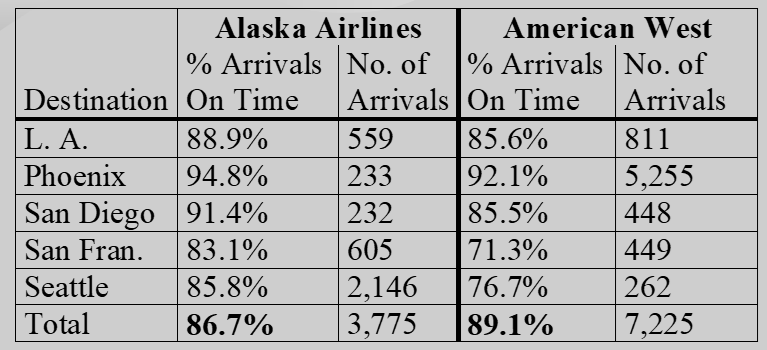
Histogram直方图
Stem and Leaf Displays茎叶图
boxplot箱型图
展示的数据: [min, Q1, m, Q3, max]
- 四分位点Quartiles: Measuring spread by examining the middle
- interquartile range (IQR)：
与直方图分布关系：
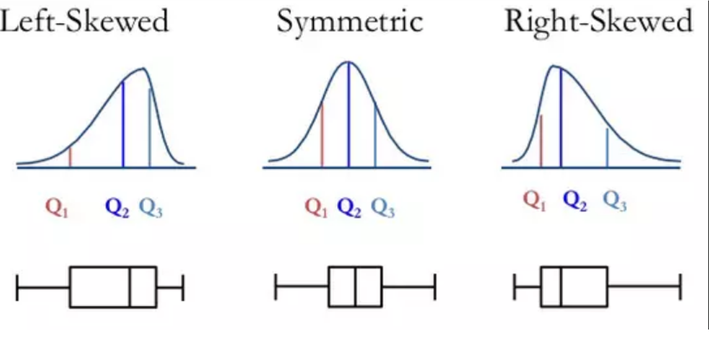
多元可视化
平行坐标系
一个数据点对应平行坐标系中的一条折线：
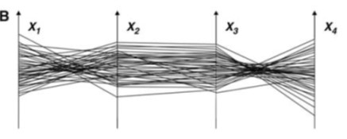
大数据集的优化(采样)：
- 聚类+透明度
- 有弧度的边(arc-edge)
- 力导向(force-directed)
- 连续的表示(continuous representation)
问题：
- 每个属性值范围可能不同，但是rescale是分开做的
- 静态图无交互难以理解
散点图矩阵
矩阵为属性*属性：对角线是属性名(也可是直方图)，表示2个属性之间的关系
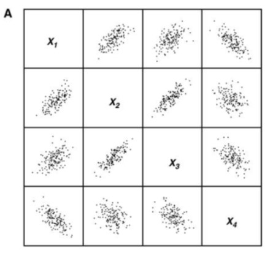
雷达图
一个数据点对应雷达图中的一个形状：
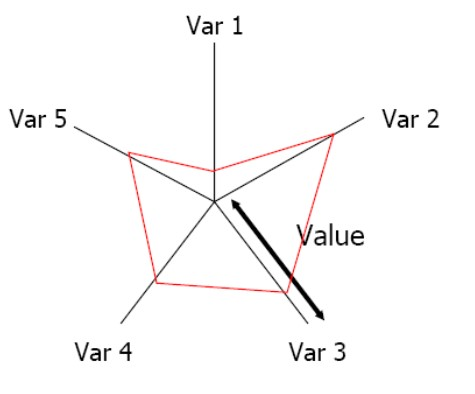
可视化指导
Graphical Integrity
- Tell the Truth
- The representation of numbers should be directly proportional to the numerical quantities measured.
- Avoid Distortion
- Maximize Data-Ink Ratio
- Avoid Chart Junks
Lie factor
公式：
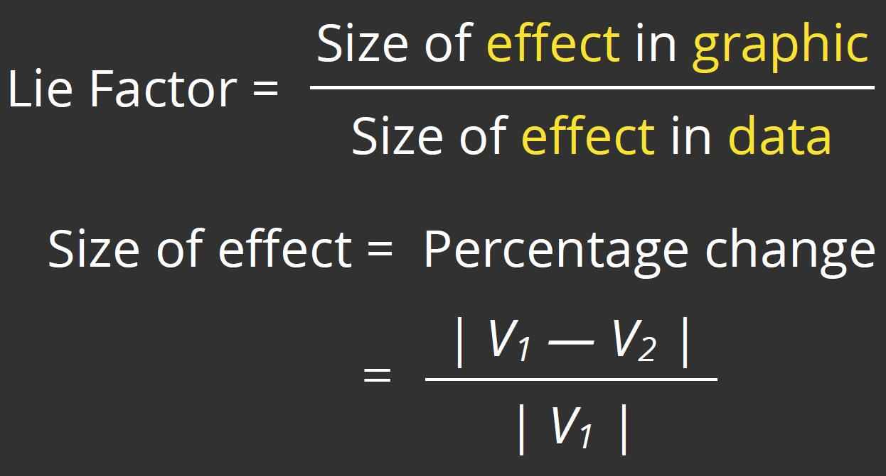
示例：
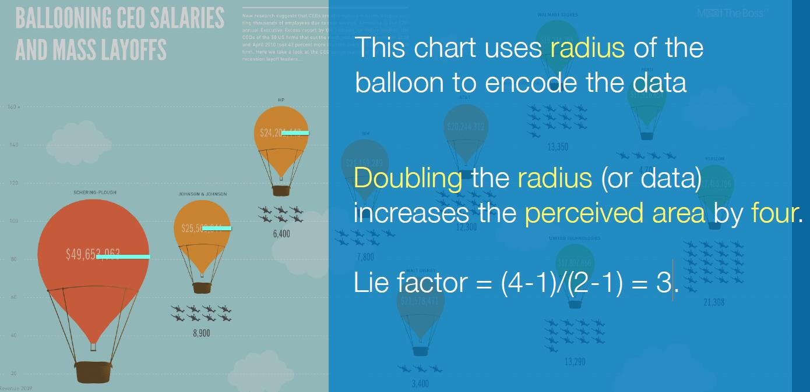
图中使用圆面积表达数据：半径增加1倍，面积增加4倍
- size of effect
- graph: = (4-1)/1 = 3
- data: = (2-1)/1 = 1
- Lie factor = 3/1 = 3
data-ink-ratio
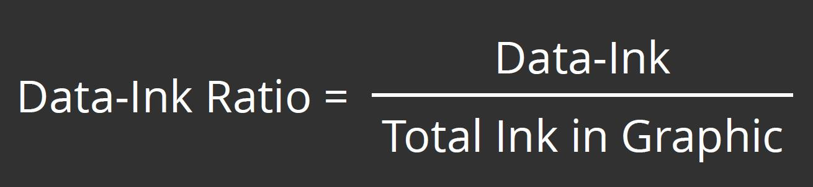
颜色感知
Pipeline
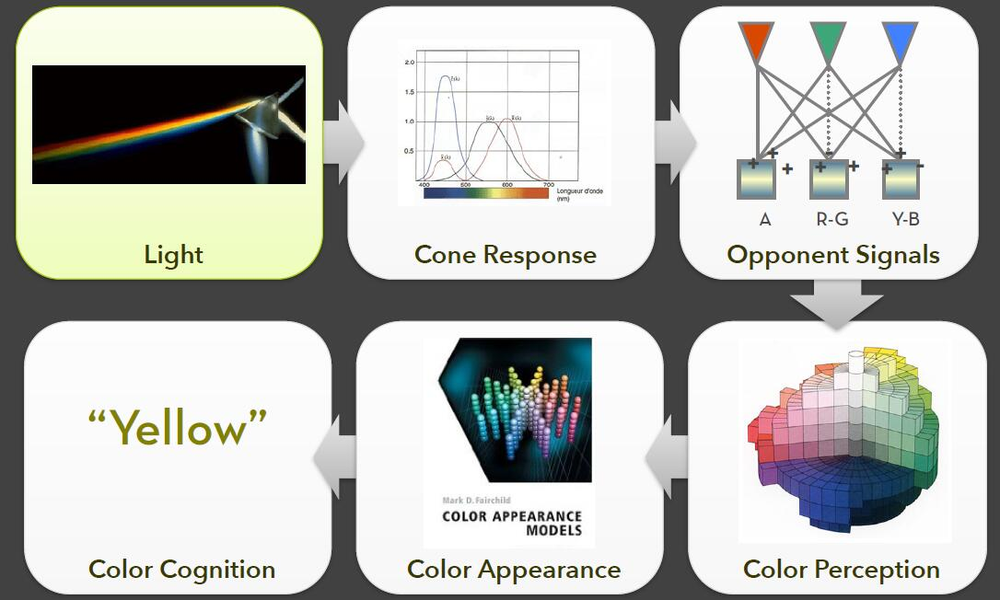
rainbow color的优缺点
小心使用彩虹色
- 人们把颜色分成不同的类别
- 色彩不是自然排列的
- 不同的亮度强调一定的标量值
- 低亮度颜色（蓝色）隐藏高频
- People segment colors into classes
- Hues are not naturally ordered
- Different lightness emphasizes certain scalar values
- Low luminance colors (blue) hide high frequencies
CIE Color Spaces
- XYZ Color Space
- LAB Color Space (D3支持)
- L：亮度 luminance
- A：红色和绿色的对比度
- B：黄色和蓝色的对比度
Classing Quantitative Data
- Equal interval (arithmetic progression)等间距
- Quantiles (recommended)分位点
- Standard deviations标准差
- Clustering (Jenks’ natural breaks / 1D K-Means)聚类
- Minimize within group variance
- Maximize between group variance
图形感知
设计准则(Design Principle)
- Tell the truth and nothing but the truth
- (don’t lie, and don’t lie by omission)
- Use encodings that people decode better
- (where better = faster and/or more accurate)
Expressiveness表现力
- 仅表达数据事实
Express all the facts in the set of data, and only the facts in the data.
Effectiveness有效性
- 信息比其他形式更容易察觉
is more readily perceived than the information in the other visualization.
Visual-Encoding
可视编码：
- Position位置
- Length长度
- Area面积
- Volume体积
- Value (Brightness)亮度
- Color Hue色彩
- Orientation (Angle)方向
- Shape形状
图形感知：
- 观众的视觉解读能力（图形）信息编码和从而解码图形中的信息。
最小可觉差JND
韦伯常数
德国生理学家韦伯(Weber,1834)曾系统研究了触觉的差别阈限。他让被试用手先后提起两个重量不大的物体并判断哪个重些。用这种方法确定了刚刚能够引起差别感觉的最小刺激量。结果发现对刺激物的差别感觉不决定于一个刺激增加的绝对数量而取决于刺激物 增量与原刺激的比值。比方说如果手上原有的重量是100克那么至少必须增加2克人们才能感觉到两个重量即100克与102克的差别如果原有的重量是200克那么增加的重量必须达到4克如果原重量为300克那么增加的重量应该是6克。可见为了引起差别感觉刺激的增量与原刺激量之间存在着某种关系。这种关系可用以下公式来表示: K=ΔI/I
Effectiveness Ranking
视觉编码的有效性排序：
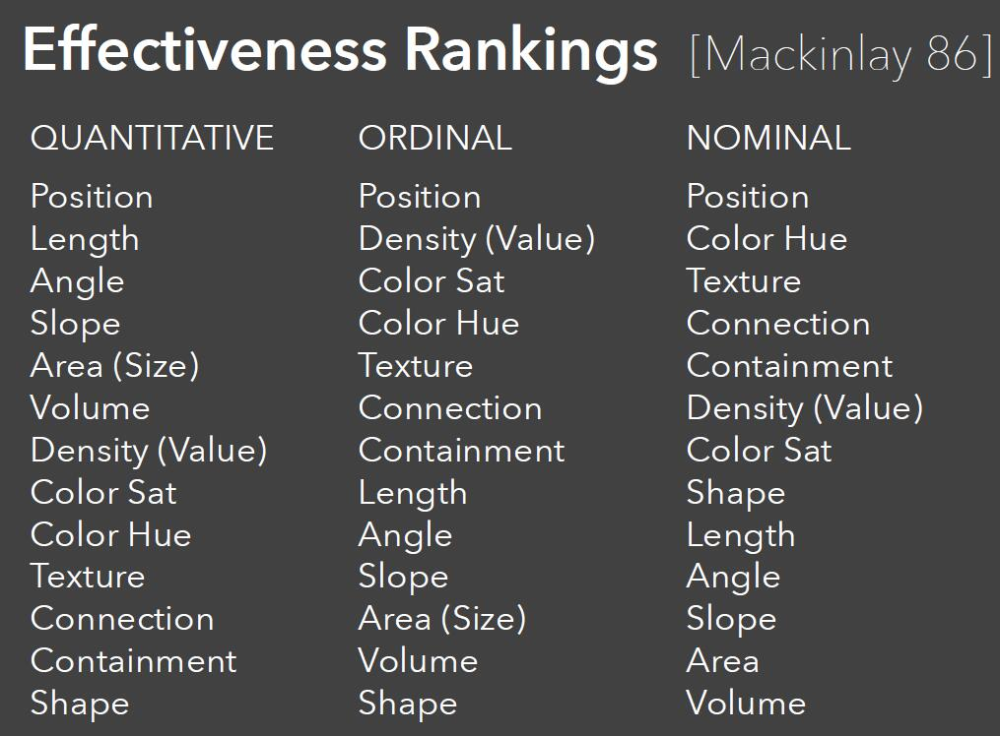
高维数据可视化
PCA
MDS
T-SNE
图可视化
Graph Layout
- 交叉点 :
- 最小化交叉点个数
- 面积
- 最小化绘图面积
- 仅包括有意义的布局
- 宽高比
- 控制在给定范围内
Force-Directed
算法伪代码
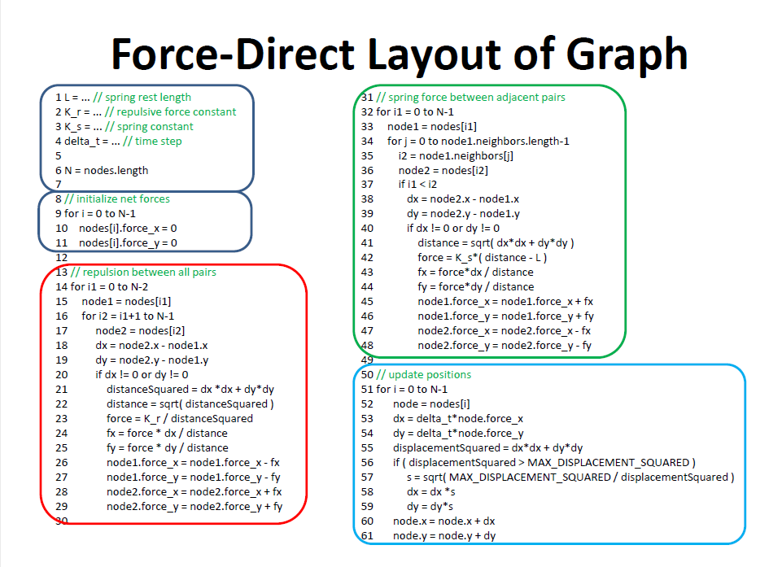
斥力(Fepulsive Force)的模拟
斥力使用库伦力，根据库伦定律模拟斥力：
引力(Spring Force)的模拟
引力使用弹力，根据胡克定律模拟引力：
位置的更新
根据在x和y方向上的分力，给定delta_t，更新dx和dy
加速优化
barnet-hut算法，使用四叉树构建，能到nlogn
Matrix Ordering
一行一列代表有边
- Pros:
- 将网络可视化为矩阵具有消除所有边交叉的优点，因为边对应于不重叠的条目
- 能够在矩阵的条目中显示与每条边相关的信息
- 条目也可以包含小的图形或符号
- Cons:
- 行和列的顺序极大地影响了解释矩阵的容易程度
- 很难沿着图中的路径走
- 受屏幕分辨率限制
排序问题
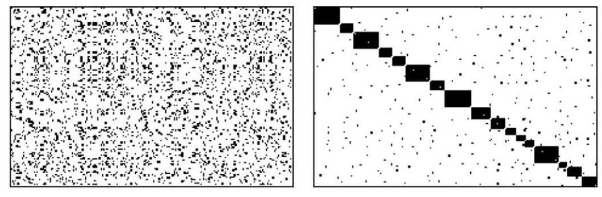
> - 左图为随机顺序 > - 右图为聚类后顺序，对角线表示聚成了17个类Tree可视化
RT Layout
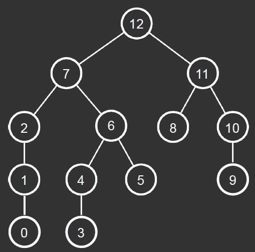
Treemap Layout
1 | Draw() { |
Squarfied Treemap Layout
宽高比Aspect Ratio: 尽量靠近1:1
文本可视化
- 宏观：大型文档
- 非结构化
- 结构化
- 微观：小型文档
- 文档间
- 检索到的文档如何与查询相关？
- 检索到的文档如何相互关联？
- 文档内
- 用词、语法风格
- 文档间
Text Visualization Pipeline
- 原数据->NLP
- 关键词、语法、语义等
- ->分析
- 找到文档的相关性、比较文档
- ->可视化
Wordle
Phrase Net
- 检查非结构化文本
- 展示词对：
- Presents pairs of terms from phrases such as:
- X and Y (as in “pride and prejudice”)
- X’s Y (as in “Jim’s trains”)
- X at Y (as in “Macy’s at Lenox”)
- X (is|are|was|were) Y
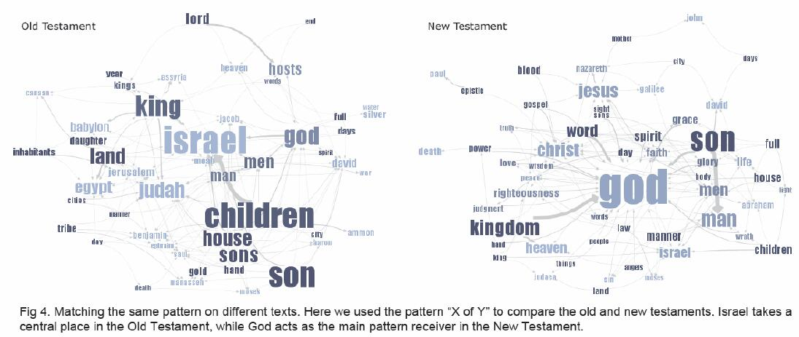
Word Tree
展示一个或多个词的上下文
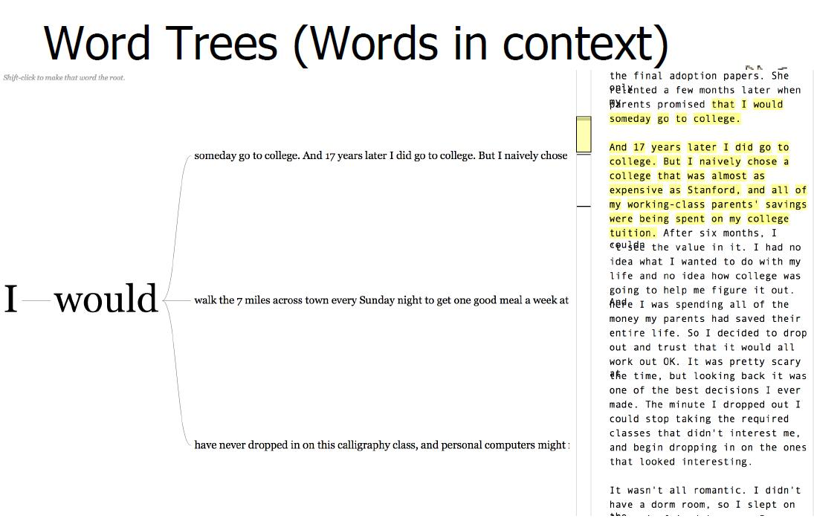
交互
交互方法分类
- Context & Detail aka Overview & Detail
- Details on Demand –details on one specific case
- Focus & Context –focus on multiple cases
- Dynamic query/filter
- Filters out un wanted data
- Does single range query
- Users interact with the query (lo/hi values)
- Visualizes query formulation
- Brushing, aka Linking
- Highlights data of interest
- Allows multiple range queries
- Users interact directly with data
- Displays query results- Change Representation, aka Re-encode
- 改变图的表达
- Animation
- Explore
- Reconfigure/rearrange
- Abstract/Elaborate aka Drill-down
- Zoom and Pan
Overview+Detail
- 多个视图展示，相同的数据，不同的分辨率，且视图之间空间分离
- 能够快速导航到要找的地方，并且不会改变细节信息
- 细节改变会立即显示在概览中
- 为查看者提供更多信息以及有关数据用例的详细信息。可以获得更多关于具体事件的信息，但是可能造成从聚集视图到个人视图的改变，缩放可能不能呈现所有的信息，或者令数据变得抽象
Focus+Context
三个前提
- 用户同时需要概述（上下文）和详细信息（焦点）
- 概述中需要的信息可能与详细信息不同
- 这两种类型的信息可以在一个单一的（动态）显示器中组合，就像在人类视觉中一样
- The user needs both overview (context) and detail information (focus) simultaneously.
- Information needed in the overview may be different from that needed in detail.
- These two types of information can be combined within a single (dynamic) display, much as in human vision.
- 同一个视图中同时包含焦点和焦点周围的环境
- 显示细节时保持用户方向
- 数据大时有问题
- 将选定的特定事件集合信息嵌入到整体当中，视图包含局部信息和整体信息。方法减少了过滤和聚合的数据量，但是需要为呈现具体事件的视图挪出空间，可能导致整体信息的变化，造成几何上的扭曲，比如相关数据的比例关系发生变化等。
Brushing and Linking
当同一数据有多个视图时应用。在视图中选择一个案例，同一案例在其他视图中高亮显示
- Linking = Brushing
- Use with multiple views
- Selecting/highlighting case in one view highlights the case in all other views
- Moving mouse over cases can reveal patterns of relationships